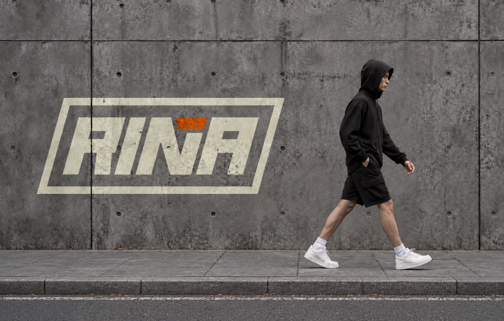
PENSADA PARA ENTRENAR USADA EN TODOS LADOS
RIÑA NACE DEL CRUCE ENTRE EL ENTRENAMIENTO Y LA CULTURA URBANA. UNA MARCA DE INDUMENTARIA PARA QUIENES HACEN DEL MOVIMIENTO PARTE DE SU DÍA Y BUSCAN UN ESTILO PROPIO, DENTRO Y FUERA DEL GIMNASIO. SU IDENTIDAD VISUAL LLEVA ESA IDEA A TRAVÉS DE FORMAS COMPACTAS, TENSIÓN Y CONTRASTE.
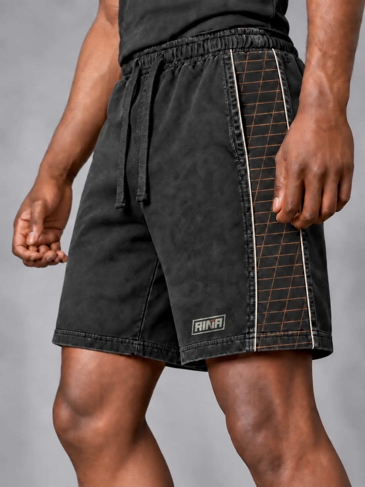
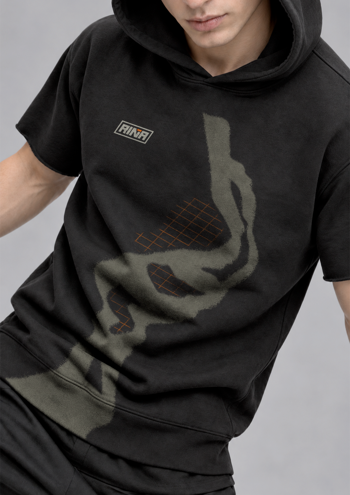
CONCEPTO Y VALORES DE LA MARCA.
LA EXIGENCIA, EL MOVIMIENTO Y LA EXPRESIÓN PERSONAL DEFINEN EL CARÁCTER DE RIÑA. EL PROYECTO TOMA ESOS VALORES COMO PUNTO DE PARTIDA PARA CONSTRUIR UNA IDENTIDAD DE PRESENCIA FUERTE: UN LOGOTIPO COMPACTO E INCLINADO, UNA PALETA DE ALTO CONTRASTE Y APLICACIONES QUE CONECTAN LA ROPA DE ENTRENAMIENTO CON UNA ESTÉTICA URBANA.
CONSTRUCCIÓN DEL LOGOTIPO.
EL LOGOTIPO DE RIÑA PARTE DE UNA ESTRUCTURA COMPACTA E INCLINADA QUE TRANSMITE MOVIMIENTO, FUERZA Y TENSIÓN. SU CONSTRUCCIÓN A 35° REFUERZA EL CARÁCTER DINÁMICO DE LA MARCA Y APORTA UNA SENSACIÓN DE AVANCE CONSTANTE. LAS FORMAS SÓLIDAS, LOS CORTES ANGULARES Y LA COMPOSICIÓN CERRADA BUSCAN REPRESENTAR RESISTENCIA, DISCIPLINA Y ACTITUD, CONSTRUYENDO UNA IDENTIDAD DIRECTA Y RECONOCIBLE TANTO DENTRO COMO FUERA DEL ENTRENAMIENTO.
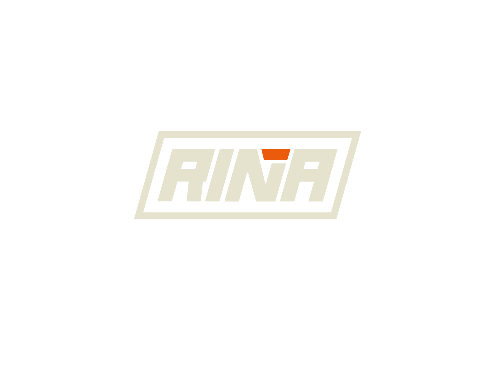
PALETA Y VARIACIONES.
EL SISTEMA CROMÁTICO DE RIÑA SE CONSTRUYE A PARTIR DE TRES TONOS DE ALTO CONTRASTE. SUS DISTINTAS COMBINACIONES PERMITEN QUE LA IDENTIDAD CONSERVE FUERZA, LEGIBILIDAD Y COHERENCIA EN CADA SOPORTE UTILIZADO.
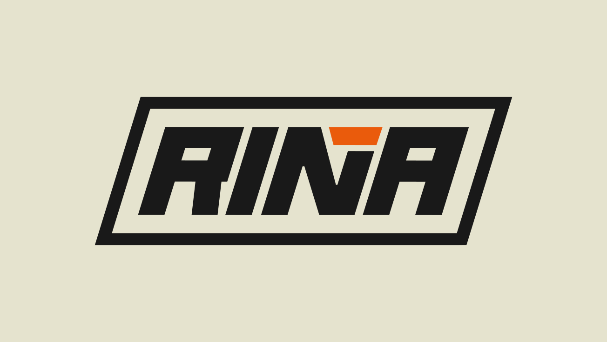
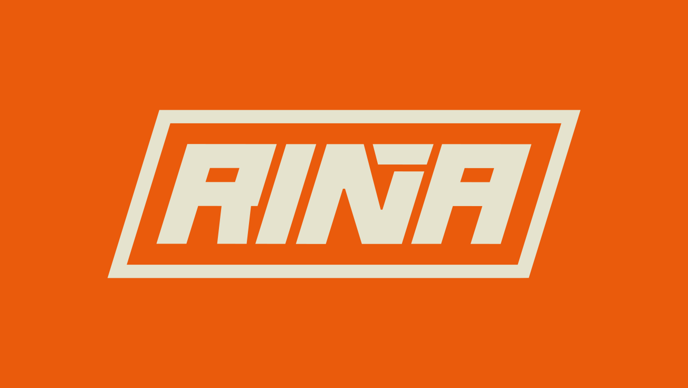
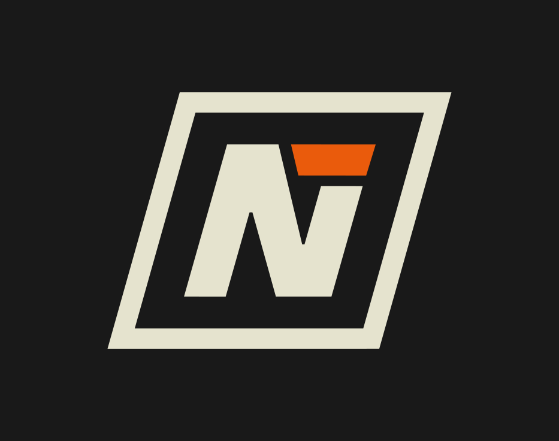
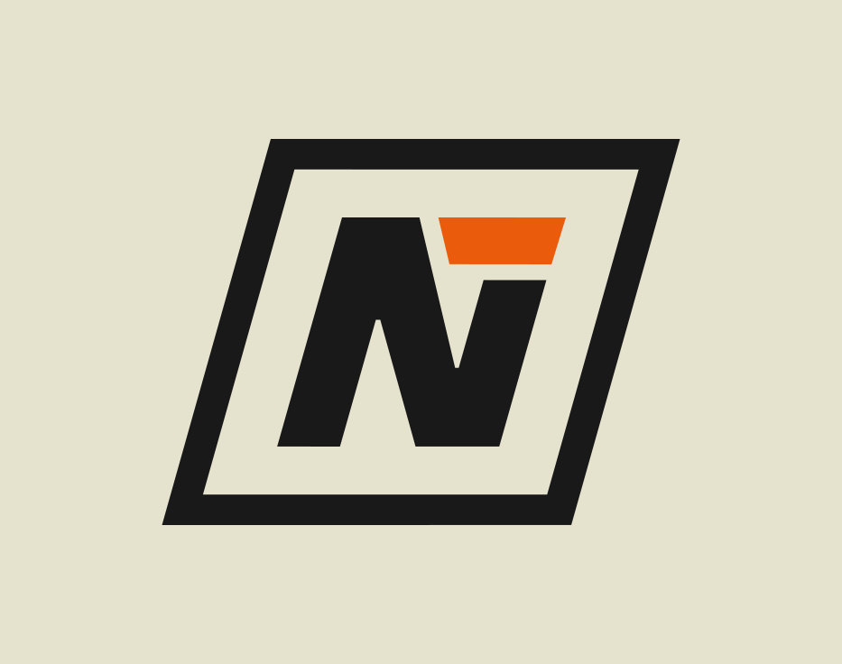
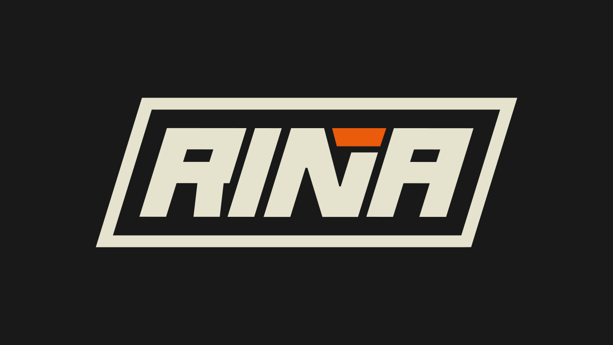
APLICACIONES DE LA MARCA.
LA IDENTIDAD SE EXTIENDE A DIFERENTES FORMATOS Y MATERIALES, ADAPTANDO EL SISTEMA VISUAL SIN PERDER SU CARÁCTER. CADA APLICACIÓN REFUERZA LA PRESENCIA DE LA MARCA EN LA INDUMENTARIA Y SUS DETALLES.
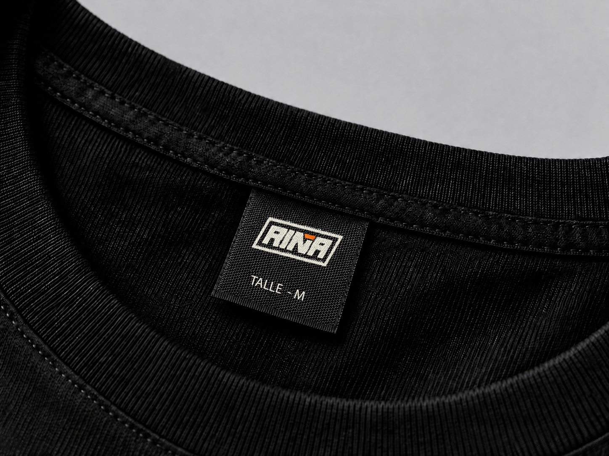
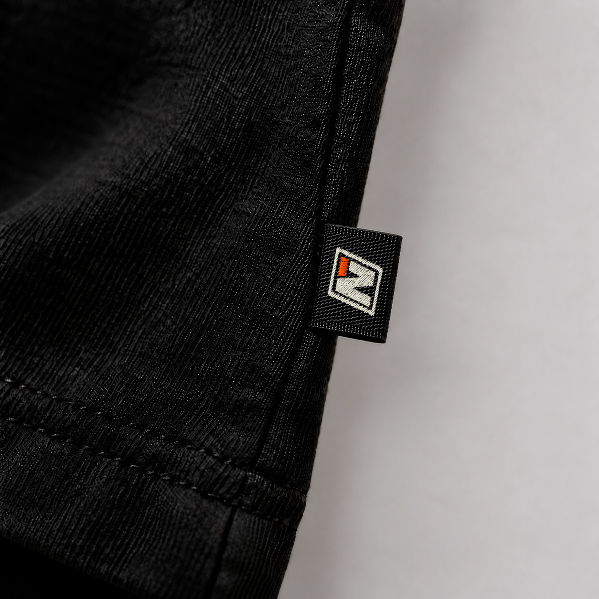
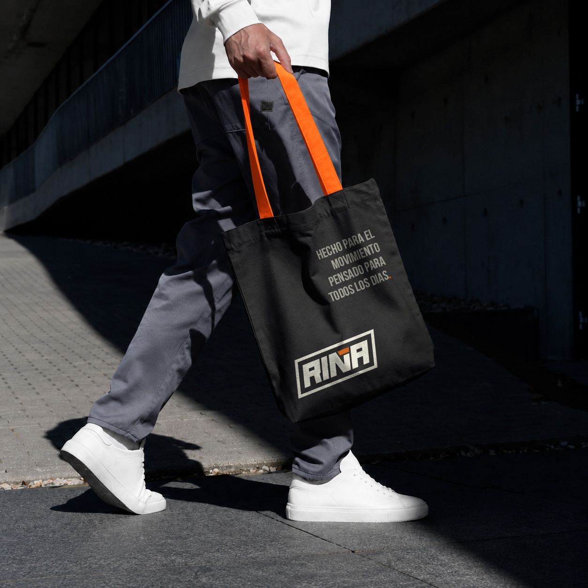
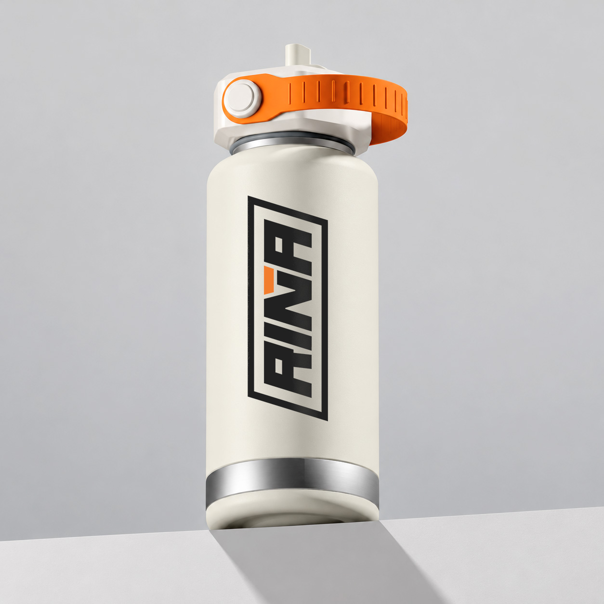